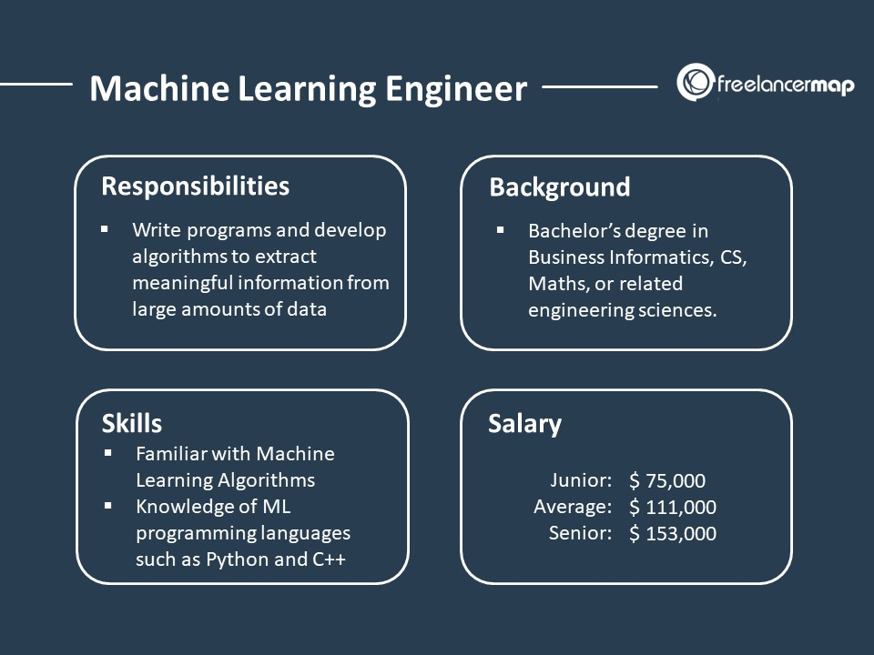

Future Career Prospects
These are some of the future career prospects that I will be looking at after graduating from DAAA. Take a look!

Machine Learning Engineer
A Machine Learning Engineer turns raw data into valuable insights that an organisation needs in order to grow and compete. They interpret and analyse data from multiple sources to come up with imaginative solutions to problems. Machine learning engineers develop self-running AI software to automate predictive models for recommended searches, virtual assistants, translation apps, chatbots, and driver-less cars. They design machine learning systems, apply algorithms to generate accurate predictions, and resolve data set problems. Their focus goes beyond specifically programming machines to perform specific tasks. They create programs that will enable machines to take actions without being specifically directed to perform those tasks
Data Stewards
A data steward is an oversight or data governance role within an organization, and is responsible for ensuring the quality and fitness for purpose of the organization's data assets, including the metadata for those data assets. A data steward may share some responsibilities with a data custodian, such as the awareness, accessibility, release, appropriate use, security and management of data. A data steward would also participate in the development and implementation of data assets. A data steward may seek to improve the quality and fitness for purpose of other data assets their organization depends upon but is not responsible for.